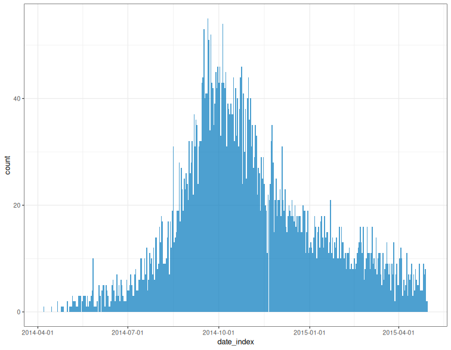

-- A --
accessors
as
as_incidence()
as_incidence.default()
as_incidence.incidence2()
as.data.frame.incidence2()
as.data.table.incidence2()
as_tibble.incidence2()
-- B --
bootstrap_incidence()
-- C --
complete_dates()
covidregionaldataUK
cumulate()
-- D --
dplyr-verbs
-- E --
estimate_peak()
estimate_peaks
-- F --
first_peak()
-- G --
get_date_index_name()
get_date_index_name.default()
get_date_index_name.incidence2()
get_dates_name()
get_count_variable_name()
get_count_variable_name.default()
get_count_variable_name.incidence2()
get_count_value_name()
get_count_value_name.default()
get_count_value_name.incidence2()
get_group_names()
get_group_names.default()
get_group_names.incidence2()
get_date_index()
get_date_index.default()
get_date_index.incidence2()
get_dates()
get_count_variable()
get_count_variable.default()
get_count_variable.incidence2()
get_count_value()
get_count_value.default()
get_count_value.incidence2()
get_groups()
get_groups.default()
get_groups.incidence2()
-- I --
incidence()
incidence_()
-- K --
keep
keep_first()
keep_last()
keep_peaks()
-- M --
mutate.incidence2()
muted()
-- N --
nest.incidence2()
-- P --
palettes
plot.incidence2()
-- R --
regroup()
regroup_()
-- S --
summarise.incidence2()
split.incidence2()
summary.incidence2()
-- V --
vibrant()
Access various elements of an incidence object
get_date_index_name(x, ...)
## Default S3 method:
get_date_index_name(x, ...)
## S3 method for class 'incidence2'
get_date_index_name(x, ...)
get_dates_name(x, ...)
get_count_variable_name(x, ...)
## Default S3 method:
get_count_variable_name(x, ...)
## S3 method for class 'incidence2'
get_count_variable_name(x, ...)
get_count_value_name(x, ...)
## Default S3 method:
get_count_value_name(x, ...)
## S3 method for class 'incidence2'
get_count_value_name(x, ...)
get_group_names(x, ...)
## Default S3 method:
get_group_names(x, ...)
## S3 method for class 'incidence2'
get_group_names(x, ...)
get_date_index(x, ...)
## Default S3 method:
get_date_index(x, ...)
## S3 method for class 'incidence2'
get_date_index(x, ...)
get_dates(x, ...)
get_count_variable(x, ...)
## Default S3 method:
get_count_variable(x, ...)
## S3 method for class 'incidence2'
get_count_variable(x, ...)
get_count_value(x, ...)
## Default S3 method:
get_count_value(x, ...)
## S3 method for class 'incidence2'
get_count_value(x, ...)
get_groups(x, ...)
## Default S3 method:
get_groups(x, ...)
## S3 method for class 'incidence2'
get_groups(x, ...)x |
An R object. |
... |
Not currently used. |
get_date_index_name(): The name of the date_index variable of x.
get_dates_name(): Alias for get_date_index_name().
get_count_variable_name(): The name of the count variable of x.
get_count_value_name(): The name of the count value of x.
get_group_names(): The name(s) of the group variable(s) of x.
get_date_index(): The date_index variable of x.
get_dates(): Alias for get_date_index().
get_count_variable(): The count variable of x.
get_count_value(): The count value of x.
get_groups(): List of the group variable(s) of x.
if (requireNamespace("outbreaks", quietly = TRUE)) {
data(ebola_sim_clean, package = "outbreaks")
dat <- ebola_sim_clean$linelist
i <- incidence(
dat,
date_index = "date_of_onset",
groups = c("gender", "hospital")
)
get_count_variable_name(i)
get_group_names(i)
get_dates_name(i)
}
#> [1] "date_index"
Generic for coercion to an <incidence2> object.
as_incidence(x, ...)
## Default S3 method:
as_incidence(x, ...)
## S3 method for class 'incidence2'
as_incidence(x, ...)
## S3 method for class 'incidence2'
as.data.frame(x, row.names, optional, ...)
## S3 method for class 'incidence2'
as.data.table(x, keep.rownames, ...)
## S3 method for class 'incidence2'
as_tibble(x, ..., .rows, .name_repair, rownames)x |
An R object. |
... |
Additional arguments to be passed to or from other methods. |
row.names |
Not used. |
optional |
Not used. |
keep.rownames |
Not used. |
.rows |
The number of rows, useful to create a 0-column tibble or just as an additional check. |
.name_repair |
Treatment of problematic column names:
This argument is passed on as |
rownames |
How to treat existing row names of a data frame or matrix:
Read more in rownames. |
An object of the desired type with additional attributes dropped.
if (requireNamespace("outbreaks", quietly = TRUE)) {
data(ebola_sim_clean, package = "outbreaks")
dat <- ebola_sim_clean$linelist
x <- incidence(dat, "date_of_onset")
as.data.frame(dat)
as.data.table(x)
as_tibble(x)
}
#> # A tibble: 367 × 3
#> date_index count_variable count
#> <date> <chr> <int>
#> 1 2014-04-07 date_of_onset 1
#> 2 2014-04-15 date_of_onset 1
#> 3 2014-04-21 date_of_onset 2
#> 4 2014-04-25 date_of_onset 1
#> 5 2014-04-26 date_of_onset 1
#> 6 2014-04-27 date_of_onset 1
#> 7 2014-05-01 date_of_onset 2
#> 8 2014-05-03 date_of_onset 1
#> 9 2014-05-04 date_of_onset 1
#> 10 2014-05-05 date_of_onset 1
#> # ℹ 357 more rows
This function can be used to bootstrap incidence2 objects. Bootstrapping is done by sampling with replacement the original input dates.
bootstrap_incidence(x, randomise_groups = FALSE)x |
An incidence2 object. |
randomise_groups |
Should groups be randomised as well in the resampling procedure; respective group sizes will be preserved, but this can be used to remove any group-specific temporal dynamics. If |
As original data are not stored in incidence2 objects, the bootstrapping is achieved by multinomial sampling of date bins weighted by their relative incidence.
An incidence2 object.
Thibaut Jombart, Tim Taylor
if (requireNamespace("outbreaks", quietly = TRUE)) {
data(fluH7N9_china_2013, package = "outbreaks")
i <- incidence(
fluH7N9_china_2013,
date_index = "date_of_onset",
groups = "gender"
)
bootstrap_incidence(i)
}
#> # incidence: 67 x 4
#> # count vars: date_of_onset
#> # groups: gender
#> date_index gender count_variable count
#> * <date> <fct> <chr> <int>
#> 1 2013-02-19 m date_of_onset 2
#> 2 2013-02-27 m date_of_onset 0
#> 3 2013-03-07 m date_of_onset 1
#> 4 2013-03-08 m date_of_onset 2
#> 5 2013-03-09 f date_of_onset 2
#> 6 2013-03-13 f date_of_onset 1
#> 7 2013-03-17 m date_of_onset 0
#> 8 2013-03-19 f date_of_onset 1
#> 9 2013-03-20 f date_of_onset 0
#> 10 2013-03-20 m date_of_onset 2
#> # ℹ 57 more rows
This function ensures that an incidence object has the same range of dates
for each grouping. By default missing counts will be filled with 0L.
complete_dates(x, expand = TRUE, fill = 0L, by = 1L, allow_POSIXct = FALSE)x |
|
expand |
Should a range of dates from the minimum to maximum value of the date index also be created. If |
fill |
The value to replace missing counts by. Defaults to |
by |
Ignored. |
allow_POSIXct |
Should this function work with POSIXct dates? Defaults to |
An incidence2 object.
x <- data.frame(
dates = Sys.Date() + c(1,3,4),
groups = c("grp1","grp2", "grp1"),
counts = 1:3
)
i <- incidence(x, date_index = "dates", groups = "groups", counts = "counts")
complete_dates(i)
#> # incidence: 8 x 4
#> # count vars: counts
#> # groups: groups
#> date_index groups count_variable count
#> <date> <chr> <fct> <int>
#> 1 2026-03-07 grp1 counts 1
#> 2 2026-03-07 grp2 counts 0
#> 3 2026-03-08 grp1 counts 0
#> 4 2026-03-08 grp2 counts 0
#> 5 2026-03-09 grp1 counts 0
#> 6 2026-03-09 grp2 counts 2
#> 7 2026-03-10 grp1 counts 3
#> 8 2026-03-10 grp2 counts 0
A dataset containing the daily time-series of cases, tests, hospitalisations, and deaths for UK.
covidregionaldataUKA data frame with 6370 rows and 26 variables:
the date that the counts were reported (YYYY-MM-DD)
the region name
the region code
new reported cases for that day
total reported cases up to and including that day
new reported deaths for that day
total reported deaths up to and including that day
new reported recoveries for that day
total reported coveries up to and including that day
new reported hospitalisations for that day
total reported hospitalisations up to and including that day (note this is cumulative total of new reported, not total currently in hospital).
tests for that day
total tests completed up to and including that day
Extracted using the covidregionaldata package on 2021-06-03.
https://CRAN.R-project.org/package=covidregionaldata
cumulate() computes the cumulative incidence over time for an
incidence2 object.
cumulate(x)x |
incidence2 object. |
dat <- data.frame(
dates = as.integer(c(0,1,2,2,3,5,7)),
groups = factor(c(1, 2, 3, 3, 3, 3, 1))
)
i <- incidence(dat, date_index = "dates", groups = "groups")
cumulate(i)
#> # incidence: 6 x 4
#> # count vars: dates
#> # groups: groups
#> date_index groups count_variable cumulative_count
#> * <int> <fct> <chr> <int>
#> 1 0 1 dates 1
#> 2 7 1 dates 2
#> 3 1 2 dates 1
#> 4 2 3 dates 2
#> 5 3 3 dates 3
#> 6 5 3 dates 4
dplyr and tidyr methods that implicitly account for the inherent grouping structure of incidence2 objects.
## S3 method for class 'incidence2'
mutate(
.data,
...,
.by,
.keep = c("all", "used", "unused", "none"),
.before = NULL,
.after = NULL
)
## S3 method for class 'incidence2'
nest(.data, ..., .by, .key, .names_sep)
## S3 method for class 'incidence2'
summarise(.data, ..., .by, .groups).data |
An incidence2 object. |
... |
Only used by |
.by |
Not used as grouping structure implicit. |
.keep |
Control which columns from
|
.before, .after |
< |
.key |
The name of the resulting nested column. Only applicable when
If |
.names_sep |
Not used. |
.groups |
Not used. |
For mutate() a modified incidence2 object if the
necessary invariants are preserved, otherwise a tibble.
For nest() a nested tibble with rows corresponding to
the count variable and (optionally) group columns of the input object.
For summarise a tibble with rows corresponding to the underlying groupings. The columns are a combination of the grouping keys and the summary expressions provided.
dplyr::mutate, tidyr::nest and dplyr::summarise for the underlying generics.
if (requireNamespace("outbreaks", quietly = TRUE) && requireNamespace("ggplot2", quietly = TRUE)) {
data(ebola_sim_clean, package = "outbreaks")
x <- subset(ebola_sim_clean$linelist, !is.na(hospital))
dat <- incidence_(x, date_of_onset, hospital, interval = "isoweek")
mutate(dat, ave = data.table::frollmean(count, n = 3L, align = "right")) |>
plot(border_colour = "white", angle = 45) +
ggplot2::geom_line(ggplot2::aes(x = date_index, y = ave))
nest(dat)
summarise(dat, model = list(glm(count ~ date_index, family = "poisson")))
}
#> # A tibble: 5 × 3
#> count_variable hospital model
#> <chr> <fct> <list>
#> 1 date_of_onset Military Hospital <glm>
#> 2 date_of_onset Connaught Hospital <glm>
#> 3 date_of_onset other <glm>
#> 4 date_of_onset Princess Christian Maternity Hospital (PCMH) <glm>
#> 5 date_of_onset Rokupa Hospital <glm>
This function can be used to estimate the peak of an epidemic curve using bootstrapped samples of the available data.
estimate_peak(x, n = 100L, alpha = 0.05, first_only = TRUE, progress = TRUE)x |
An incidence2 object. |
n |
The number of bootstrap datasets to be generated; defaults to 100.
|
alpha |
The type 1 error chosen for the confidence interval; defaults to 0.05. |
first_only |
Should only the first peak (by date) be kept. Defaults to |
progress |
Should a progress bar be displayed (default = TRUE) |
Input dates are resampled with replacement to form bootstrapped datasets; the peak is reported for each, resulting in a distribution of peak times. When there are ties for peak incidence, only the first date is reported.
Note that the bootstrapping approach used for estimating the peak time makes the following assumptions:
the total number of event is known (no uncertainty on total incidence)
dates with no events (zero incidence) will never be in bootstrapped datasets
the reporting is assumed to be constant over time, i.e. every case is equally likely to be reported
A data frame with the the following columns:
observed_date: the date of peak incidence of the original dataset.
observed_count: the peak incidence of the original dataset.
estimated: the median peak time of the bootstrap datasets.
lower_ci/upper_ci: the confidence interval based on bootstrap datasets.
bootstrap_peaks: a nested tibble containing the the peak times of the
bootstrapped datasets.
Thibaut Jombart and Tim Taylor, with inputs on caveats from Michael Höhle.
bootstrap_incidence() for the bootstrapping underlying this approach and
keep_peaks() to get the peaks in a single
incidence2 object.
if (requireNamespace("outbreaks", quietly = TRUE)) {
# load data and create incidence
data(fluH7N9_china_2013, package = "outbreaks")
i <- incidence(fluH7N9_china_2013, date_index = "date_of_onset")
# find 95% CI for peak time using bootstrap
estimate_peak(i)
}
#> # A tibble: 1 × 7
#> count_variable observed_peak observed_count bootstrap_peaks lower_ci
#> <chr> <date> <int> <list> <date>
#> 1 date_of_onset 2013-04-03 7 <df [100 × 1]> 2013-03-29
#> # ℹ 2 more variables: median <date>, upper_ci <date>
incidence() calculates the incidence of different events across specified
time periods and groupings. incidence_() does the same but with support for
tidy-select semantics in some of its arguments.
incidence(
x,
date_index,
groups = NULL,
counts = NULL,
count_names_to = "count_variable",
count_values_to = "count",
date_names_to = "date_index",
rm_na_dates = TRUE,
interval = NULL,
offset = NULL,
complete_dates = FALSE,
fill = 0L,
...
)
incidence_(
x,
date_index,
groups = NULL,
counts = NULL,
count_names_to = "count_variable",
count_values_to = "count",
date_names_to = "date_index",
rm_na_dates = TRUE,
interval = NULL,
offset = NULL,
complete_dates = FALSE,
...
)x |
A data frame object representing a linelist or pre-aggregated dataset. |
date_index |
The time index(es) of the given data. This should be the name(s) corresponding to the desired date column(s) in x. A named vector can be used for convenient relabelling of the resultant output. Multiple indices only make sense when |
groups |
An optional vector giving the names of the groups of observations for which incidence should be grouped. A named vector can be used for convenient relabelling of the resultant output. |
counts |
The count variables of the given data. If NULL (default) the data is taken to be a linelist of individual observations. A named vector can be used for convenient relabelling of the resultant output. |
count_names_to |
The column to create which will store the |
count_values_to |
The name of the column to store the resultant count values in. |
date_names_to |
The name of the column to store the date variables in. |
rm_na_dates |
Should |
interval |
An optional scalar integer or string indicating the (fixed) size of the desired time interval you wish to use for for computing the incidence. Defaults to NULL in which case the date_index columns are left unchanged. Numeric values are coerced to integer and treated as a number of days to group. Text strings can be one of: More details can be found in the "Interval specification" section. |
offset |
Only applicable when An optional scalar integer or date indicating the value you wish to start counting periods from relative to the Unix Epoch:
|
complete_dates |
Should the resulting object have the same range of dates for each grouping. Missing counts will be filled with Will attempt to use More flexible completion is possible by using the |
fill |
Only applicable when The value to replace missing counts caused by completing dates. If unset then will default to |
... |
Not currently used. |
incidence2 objects are a sub class of data frame with some
additional invariants. That is, an incidence2 object must:
have one column representing the date index (this does not need to be a
date object but must have an inherent ordering over time);
have one column representing the count variable (i.e. what is being counted) and one variable representing the associated count;
have zero or more columns representing groups;
not have duplicated rows with regards to the date and group variables.
A tibble with subclass incidence2.
Where interval is specified, incidence(), predominantly uses the
grates package to generate
appropriate date groupings. The grouping used depends on the value of
interval. This can be specified as either an integer value or a string
corresponding to one of the classes:
integer values: <grates_period> object, grouped by the specified number of days.
day, daily: <Date> objects.
week(s), weekly, isoweek: <grates_isoweek> objects.
epiweek(s): <grates_epiweek> objects.
month(s), monthly, yearmonth: <grates_yearmonth> objects.
quarter(s), quarterly, yearquarter: <grates_yearquarter> objects.
year(s) and yearly: <grates_year> objects.
For "day" or "daily" interval, we provide a thin wrapper around as.Date()
that ensures the underlying data are whole numbers and that time zones are
respected. Note that additional arguments are not forwarded to as.Date()
so for greater flexibility users are advised to modifying your input prior to
calling incidence().
browseVignettes("grates") for more details on the grate object classes.
if (requireNamespace("outbreaks", quietly = TRUE)) {
data(ebola_sim_clean, package = "outbreaks")
dat <- ebola_sim_clean$linelist
incidence(dat, "date_of_onset")
incidence_(dat, date_of_onset)
incidence(dat, "date_of_onset", groups = c("gender", "hospital"))
incidence_(dat, date_of_onset, groups = c(gender, hospital))
}
#> # incidence: 2,535 x 5
#> # count vars: date_of_onset
#> # groups: gender, hospital
#> date_index gender hospital count_variable count
#> <date> <fct> <fct> <chr> <int>
#> 1 2014-04-07 f Military Hospital date_of_onset 1
#> 2 2014-04-15 m Connaught Hospital date_of_onset 1
#> 3 2014-04-21 f other date_of_onset 1
#> 4 2014-04-21 m other date_of_onset 1
#> 5 2014-04-25 f <NA> date_of_onset 1
#> 6 2014-04-26 f other date_of_onset 1
#> 7 2014-04-27 f <NA> date_of_onset 1
#> 8 2014-05-01 f Princess Christian Maternity Hospital… date_of_onset 1
#> 9 2014-05-01 f Rokupa Hospital date_of_onset 1
#> 10 2014-05-03 f Connaught Hospital date_of_onset 1
#> # ℹ 2,525 more rows
keep_first() and keep_last() keep the first and last n rows to occur
for each grouping when in ascending date order. keep_peaks() keeps the rows
with the maximum count value for each group. first_peak() is a convenience
wrapper around keep_peaks() with the first_only argument set to TRUE.
keep_first(x, n, complete_dates = TRUE, ...)
keep_last(x, n, complete_dates = TRUE, ...)
keep_peaks(x, complete_dates = TRUE, first_only = FALSE, ...)
first_peak(x, complete_dates = TRUE, ...)x |
incidence2 object. |
n |
Number of entries to keep.
|
complete_dates |
Should Defaults to TRUE. |
... |
Other arguments passed to |
first_only |
Should only the first peak (by date) be kept. Defaults to |
incidence2 object with the chosen entries.
if (requireNamespace("outbreaks", quietly = TRUE)) {
data(ebola_sim_clean, package = "outbreaks")
dat <- ebola_sim_clean$linelist
inci <- incidence(dat, "date_of_onset")
keep_first(inci, 3)
keep_last(inci, 3)
}
#> # incidence: 3 x 3
#> # count vars: date_of_onset
#> date_index count_variable count
#> <date> <chr> <int>
#> 1 2015-04-28 date_of_onset 8
#> 2 2015-04-29 date_of_onset 2
#> 3 2015-04-30 date_of_onset 2
These functions are color palettes used in incidence. The palettes come from
https://personal.sron.nl/~pault/#sec:qualitative and exclude grey, which
is reserved for missing data.
vibrant(n)
muted(n)n |
Number of colours.
|
vibrant(5)
#> [1] "#0077BB" "#33BBEE" "#009988" "#EE7733" "#CC3311"
muted(10)
#> [1] "#332288" "#7EB9E2" "#53B1AB" "#228855" "#5C8933" "#B7AF51" "#D7AA77"
#> [8] "#BC566F" "#8B255C" "#AA4499"
plot() can be used to provide a bar plot of an incidence object. Due
to the complexities with automating plotting it is some what experimental in
nature and it may be better to use ggplot2 directly.
## S3 method for class 'incidence2'
plot(
x,
y,
width = 1,
colour_palette = vibrant,
border_colour = NA,
na_colour = "grey",
alpha = 0.7,
fill = NULL,
legend = c("right", "left", "bottom", "top", "none"),
title = NULL,
angle = 0,
size = NULL,
nrow = NULL,
n_breaks = 6L,
show_cases = FALSE,
...
)x |
incidence2 object. |
y |
Not used. Required for compatibility with the |
width |
Value between 0 and 1 indicating the relative size of the bars to the interval. Default 1. |
colour_palette |
The color palette to be used for the different count variables. Defaults to |
border_colour |
The color to be used for the borders of the bars. Use |
na_colour |
The colour to plot Defaults to |
alpha |
The alpha level for color transparency, with 1 being fully opaque and 0 fully transparent Defaults to 0.7. |
fill |
Which variable to colour plots by. Must be a If NULL no distinction if made for plot colours. |
legend |
Position of legend in plot. Only applied if One of "right" (default), "left", "bottom", "top" or "none". |
title |
Optional title for the graph. |
angle |
Rotation angle for text. |
size |
text size in pts. |
nrow |
Number of rows used for facetting if there are group variables present and just one count in the incidence object. Numeric values are coerced to integer via |
n_breaks |
Approximate number of breaks calculated using Numeric values are coerced to integer via Default 6L. |
show_cases |
if Normally only used for outbreaks with a small number of cases. Defaults to |
... |
Not currently used. |
Faceting will occur automatically if either grouping variables or multiple counts are present.
If there are multiple count variables, each count will occupy a different row of the resulting plot.
Utilises ggplot2 so this must be installed to use.
A ggplot2::ggplot() object.
if (requireNamespace("outbreaks", quietly = TRUE) && requireNamespace("ggplot2", quietly = TRUE)) {
data(ebola_sim_clean, package = "outbreaks")
dat <- ebola_sim_clean$linelist
inci <- incidence(dat, date_index = "date_of_onset", groups = "hospital")
plot(inci, angle = 45)
inci2 <- regroup(inci)
plot(inci2)
}

This function regroups an incidence2 object across
the specified groups. The resulting incidence2
object will contains counts aggregated over the specified groups. The only
difference between regroup() and regroup_() is that the latter is built
on top of tidy-select semantics for the group
input.
regroup(x, groups = NULL)
regroup_(x, groups = NULL)x |
|
groups |
The groups to sum over. If |
if (requireNamespace("outbreaks", quietly = TRUE)) {
data(ebola_sim_clean, package = "outbreaks")
dat <- ebola_sim_clean$linelist
i <- incidence(
dat,
date_index = "date_of_onset",
groups = c("gender", "hospital")
)
regroup(i)
regroup_(i)
regroup(i, "hospital")
regroup_(i, hospital)
}
#> # incidence: 1,635 x 4
#> # count vars: date_of_onset
#> # groups: hospital
#> date_index hospital count_variable count
#> <date> <fct> <chr> <int>
#> 1 2014-04-07 Military Hospital date_of_onset 1
#> 2 2014-04-15 Connaught Hospital date_of_onset 1
#> 3 2014-04-21 other date_of_onset 2
#> 4 2014-04-25 <NA> date_of_onset 1
#> 5 2014-04-26 other date_of_onset 1
#> 6 2014-04-27 <NA> date_of_onset 1
#> 7 2014-05-01 Princess Christian Maternity Hospital (PCMH) date_of_onset 1
#> 8 2014-05-01 Rokupa Hospital date_of_onset 1
#> 9 2014-05-03 Connaught Hospital date_of_onset 1
#> 10 2014-05-04 <NA> date_of_onset 1
#> # ℹ 1,625 more rows
Split divides and incidence2 object in to it's underlying groupings (count variable and optionally groups).
## S3 method for class 'incidence2'
split(x, f, drop, ...)x |
An incidence2 object. |
f |
Not used. Present only for generic compatibility. |
drop |
Not used. Present only for generic compatibility. |
... |
Not used. Present only for generic compatibility. |
A list of tibbles contained the split data. This list also has a "key" attribute which is a tibble with rows corresponding to the grouping of each split.
if (requireNamespace("outbreaks", quietly = TRUE)) {
data(ebola_sim_clean, package = "outbreaks")
ebola_sim_clean$linelist |>
subset(!is.na(hospital)) |>
incidence_(date_of_onset, hospital, interval = "isoweek") |>
split()
}
#> [[1]]
#> # A tibble: 53 × 4
#> date_index hospital count_variable count
#> <isowk> <fct> <chr> <int>
#> 1 2014-W15 Military Hospital date_of_onset 1
#> 2 2014-W19 Military Hospital date_of_onset 5
#> 3 2014-W20 Military Hospital date_of_onset 4
#> 4 2014-W21 Military Hospital date_of_onset 3
#> 5 2014-W22 Military Hospital date_of_onset 2
#> 6 2014-W23 Military Hospital date_of_onset 2
#> 7 2014-W24 Military Hospital date_of_onset 4
#> 8 2014-W25 Military Hospital date_of_onset 1
#> 9 2014-W26 Military Hospital date_of_onset 3
#> 10 2014-W27 Military Hospital date_of_onset 4
#> # ℹ 43 more rows
#>
#> [[2]]
#> # A tibble: 54 × 4
#> date_index hospital count_variable count
#> <isowk> <fct> <chr> <int>
#> 1 2014-W16 Connaught Hospital date_of_onset 1
#> 2 2014-W18 Connaught Hospital date_of_onset 1
#> 3 2014-W19 Connaught Hospital date_of_onset 3
#> 4 2014-W20 Connaught Hospital date_of_onset 2
#> 5 2014-W21 Connaught Hospital date_of_onset 5
#> 6 2014-W22 Connaught Hospital date_of_onset 4
#> 7 2014-W23 Connaught Hospital date_of_onset 6
#> 8 2014-W24 Connaught Hospital date_of_onset 6
#> 9 2014-W25 Connaught Hospital date_of_onset 12
#> 10 2014-W26 Connaught Hospital date_of_onset 8
#> # ℹ 44 more rows
#>
#> [[3]]
#> # A tibble: 53 × 4
#> date_index hospital count_variable count
#> <isowk> <fct> <chr> <int>
#> 1 2014-W17 other date_of_onset 3
#> 2 2014-W19 other date_of_onset 1
#> 3 2014-W20 other date_of_onset 5
#> 4 2014-W21 other date_of_onset 1
#> 5 2014-W22 other date_of_onset 3
#> 6 2014-W23 other date_of_onset 3
#> 7 2014-W24 other date_of_onset 2
#> 8 2014-W25 other date_of_onset 5
#> 9 2014-W26 other date_of_onset 2
#> 10 2014-W27 other date_of_onset 9
#> # ℹ 43 more rows
#>
#> [[4]]
#> # A tibble: 50 × 4
#> date_index hospital count_variable count
#> <isowk> <fct> <chr> <int>
#> 1 2014-W18 Princess Christian Maternity Hospital (PCMH) date_of_onset 1
#> 2 2014-W19 Princess Christian Maternity Hospital (PCMH) date_of_onset 1
#> 3 2014-W20 Princess Christian Maternity Hospital (PCMH) date_of_onset 1
#> 4 2014-W21 Princess Christian Maternity Hospital (PCMH) date_of_onset 2
#> 5 2014-W22 Princess Christian Maternity Hospital (PCMH) date_of_onset 4
#> 6 2014-W25 Princess Christian Maternity Hospital (PCMH) date_of_onset 3
#> 7 2014-W27 Princess Christian Maternity Hospital (PCMH) date_of_onset 4
#> 8 2014-W28 Princess Christian Maternity Hospital (PCMH) date_of_onset 2
#> 9 2014-W29 Princess Christian Maternity Hospital (PCMH) date_of_onset 7
#> 10 2014-W30 Princess Christian Maternity Hospital (PCMH) date_of_onset 5
#> # ℹ 40 more rows
#>
#> [[5]]
#> # A tibble: 51 × 4
#> date_index hospital count_variable count
#> <isowk> <fct> <chr> <int>
#> 1 2014-W18 Rokupa Hospital date_of_onset 1
#> 2 2014-W19 Rokupa Hospital date_of_onset 1
#> 3 2014-W20 Rokupa Hospital date_of_onset 1
#> 4 2014-W22 Rokupa Hospital date_of_onset 2
#> 5 2014-W23 Rokupa Hospital date_of_onset 2
#> 6 2014-W24 Rokupa Hospital date_of_onset 1
#> 7 2014-W25 Rokupa Hospital date_of_onset 1
#> 8 2014-W27 Rokupa Hospital date_of_onset 1
#> 9 2014-W28 Rokupa Hospital date_of_onset 5
#> 10 2014-W29 Rokupa Hospital date_of_onset 4
#> # ℹ 41 more rows
#>
#> attr(,"key")
#> # A tibble: 5 × 2
#> count_variable hospital
#> <chr> <fct>
#> 1 date_of_onset Military Hospital
#> 2 date_of_onset Connaught Hospital
#> 3 date_of_onset other
#> 4 date_of_onset Princess Christian Maternity Hospital (PCMH)
#> 5 date_of_onset Rokupa Hospital
Summary of an incidence object
## S3 method for class 'incidence2'
summary(object, ...)object |
An incidence2 object. |
... |
Not used. |
object (invisibly).
data(ebola_sim_clean, package = "outbreaks")
dat <- ebola_sim_clean$linelist
inci <- incidence(dat, "date_of_onset", groups = c("gender", "hospital"))
summary(inci)
#> From: 2014-04-07
#> To: 2015-04-30
#> Groups: gender, hospital
#>
#> Total observations:
#> # A data frame: 12 × 4
#> gender hospital count_variable count
#> <fct> <fct> <chr> <int>
#> 1 f Military Hospital date_of_onset 439
#> 2 m Connaught Hospital date_of_onset 848
#> 3 f other date_of_onset 437
#> 4 m other date_of_onset 439
#> 5 f <NA> date_of_onset 739
#> 6 f Princess Christian Maternity Hospital (PCMH) date_of_onset 220
#> 7 f Rokupa Hospital date_of_onset 210
#> 8 f Connaught Hospital date_of_onset 889
#> 9 m Rokupa Hospital date_of_onset 241
#> 10 m Military Hospital date_of_onset 450
#> 11 m Princess Christian Maternity Hospital (PCMH) date_of_onset 200
#> 12 m <NA> date_of_onset 717